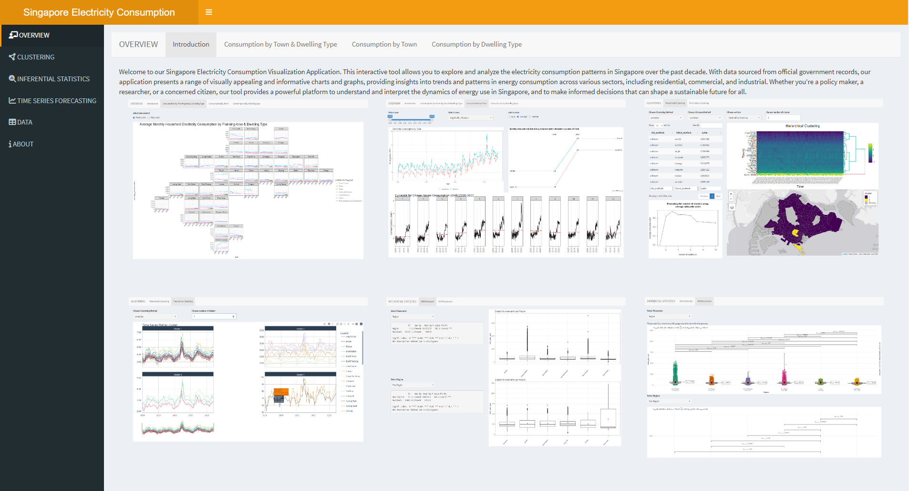
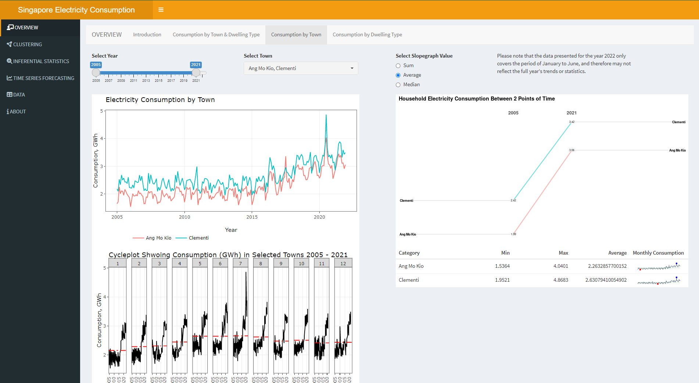
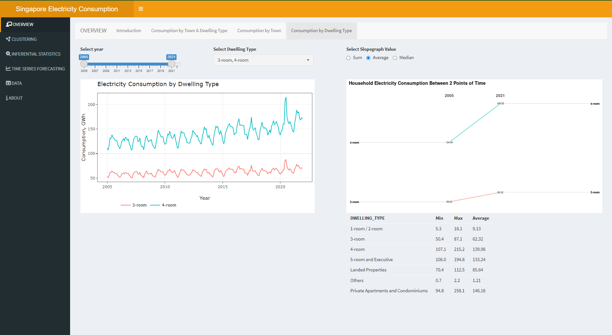
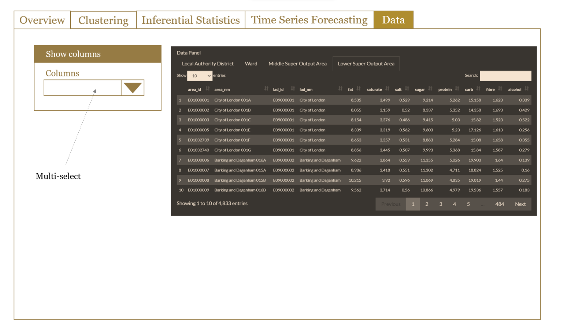

1 Objective
Singapore has progressively moved towards an open electricity market since 2001 to ensure a reliable energy supply and promote effective competition in the energy market.
With growing competition in the market, it becomes increasingly important for market players such as regulators, suppliers and retailers to understand the electricity consumption pattern in Singapore to ensure adequate supply planning and pricing structure.
To assist relevant market players in analyzing electricity consumption data effectively, we created this RShinny App to visualize Singapore electricity consumption pattern and trend, perform statistical analysis as well as forecast the future trends.
2 Scope
Our RShinny app allows users to interact with the data to:
- Explore the electricity consumption patterns and trends in Singapore,
- Cluster planning areas based on similarities in consumption patterns,
- Perform inferential statistical analysis, and
- Forecast future consumption trend.
A detailed description and sketch of the proposed analyses and visualizations are presented in section 4 of this proposal.
3 Data
The data used in this project is extracted from Energy Market Authority (EMA) Singapore. It contains data between year 2005 and 2022, with a total of 35 tabs. The tabs are broadly categorized into 7 sections, namely:
- Energy Supply
- Energy Transformation
- Energy Consumption
- Energy Balances
- Energy Prices
- Solar
- Manpower
For this project, we will be focusing on household electricity consumption.
4 Visualization and Analysis
4.1 Overview Dashboard
To provide users some basic insights on the Singapore electricity consumption, an Overview tab is built for users to explore the electricity consumption by regions, planning areas and dwelling types. Changes over time are also visualized to provide users a more comprehensive view.
4.1.1 Main R Packages & Functions
- ggplot2: for descriptive visualization such as boxplots
- ggiraph/plotly: for interactive visualization
- geofacet: for visualization laid out according to the geographic topology
- timetk: for time series visualization
4.1.2 Application Design

4.2


4.3 Clustering Analysis
Clustering analysis is performed to help users identify clusters with distinct consumption patterns. The clustering analysis is done using the consumption data for each planning area and dwelling type over time. This analysis will help stakeholders in future strategic planning activities such as supply planning and pricing.
4.3.1 Main R Packages & Functions
- dtwclust: for time series clustering
- dendextend: to visualize and compare hierarchical clustering’s dendrogram
- tmap: representing clusters on interactive map visual
4.3.2 Application Design
INSERT SCREENSHOT
4.4 Inferential Analysis
When there are more than two sample groups, ANOVA (Analysis of Variance) is used to test if there are statistically significant differences between the means of these independent sample groups. In other words, it compares the means of different samples to determine the influence of one or more factors.
[TBC] Correlation plots, also known as correlograms for more than two variables, facilitate the visualization of the correlation between continuous variables.[TBC]
4.4.1 Main R Packages & Functions
- ggplot2: for descriptive visualization such as boxplots
- ggbetweenstats: A combination of box and violin plots along with jittered data points for between-subjects designs with statistical details included in the plot as a subtitle
- ggcorrplot: Visualize a correlation matrix using ggplot2. It provides a solution for reordering the correlation matrix and displays the significance level on the correlogram. It includes also a function for computing a matrix of correlation p-values.
4.4.2 Application Design
INSERT SCREENSHOT
4.5 Time Series Forecasting
Various predictive models are built onto the app for users to forecast the future consumption trends. The model accuracy and confidence level are also made available for users.
4.5.1 Main R Packages & Functions
- modeltime: The time series forecasting framework for use with the ‘tidymodels’ ecosystem. Models considered include ARIMA, Exponential Smoothing, SARIMA, Long Short-Term Memory and additional time series models from the ‘forecast’, ‘tseries’ and ‘prophet’ packages.
- tidymodels: a collection of packages for modeling and machine learning using tidyverse principles.
4.5.2 Application Design
INSERT SCREENSHOT
4.6 Data
A data view is introduced to provide the user with an overview of how the data appears. Users will be able to choose which table and columns to display.
4.6.1 Visual Design

5 Project Timeline